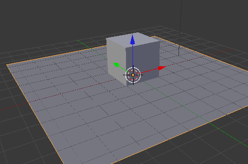
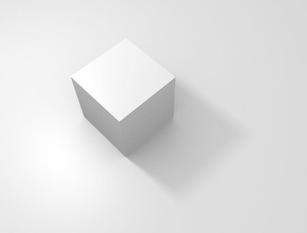
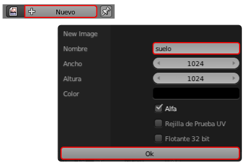
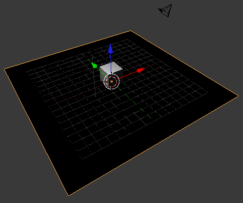
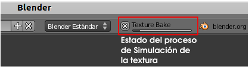
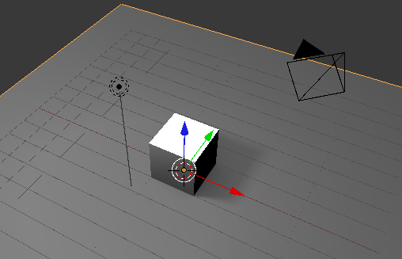
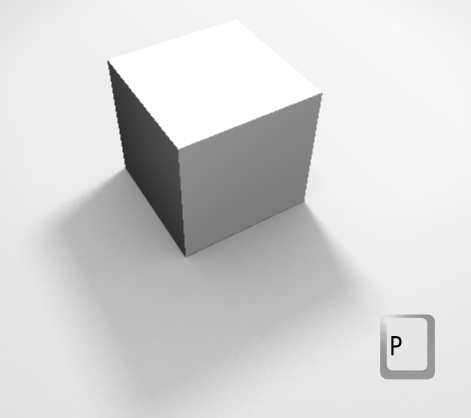
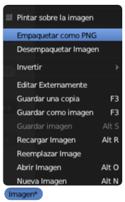

Simuladas
Mucho más interesante que hacer nosotros los gráficos para las sombras es aprovecharse de los recursos que incorpora Blender para crear texturas que se mapean automáticamente tras un renderizado.
Lo vemos en un ejemplo sencillo en el que partimos de una escena de un cubo sobre un plano.
Aquí no es tan importante si el plano tiene o no asignado un material. En el caso de tenerlo, lo único de lo que nos preocupamos ahora es de que no tenga activada Textura en caras en la botonera Opciones.
Sería fantástico conseguir un efecto de sombra arrojada como esa, e incluso que se conservara ese tono de oclusión ambiental. ¿Se puede?. Sí, y además con muy poco trabajo. Vamos por orden:
- Nos vamos al entorno UV Editing.
- En el Editor UV
 creamos una imagen (no la cargamos tal y como estamos acostumbrados) pulsando el botón Nuevo. En el cuadro que se nos muestra le damos un Nombre (suelo es una buena opción) pulsamos Ok. Con esto se crea una imagen de 1024x1024 completamente negra (si nos fijamos ese es el color por defecto).
creamos una imagen (no la cargamos tal y como estamos acostumbrados) pulsando el botón Nuevo. En el cuadro que se nos muestra le damos un Nombre (suelo es una buena opción) pulsamos Ok. Con esto se crea una imagen de 1024x1024 completamente negra (si nos fijamos ese es el color por defecto).

- Como es habitual, le asignamos la imagen desde el editor Vista 3D con Malla/Desplegar UVs/Desenvolver. El resultado con sombreado Textura debe ser algo así.

- Regresamos al entorno de trabajo Default y nos vamos directos al panel Render
 , buscamos la botonera Simular y pulsamos el botón del mismo nombre. El resultado no es instantáneo porque Blender necesita un tiempo para hacer el render y asignárselo al plano. Este proceso se muestra en la parte alta de la interfaz
, buscamos la botonera Simular y pulsamos el botón del mismo nombre. El resultado no es instantáneo porque Blender necesita un tiempo para hacer el render y asignárselo al plano. Este proceso se muestra en la parte alta de la interfaz

Al final del proceso la textura se asigna al plano de modo automático (no olvidemos estar en sombreado Textura para verlo en tiempo real).
Si cambiamos al entorno UV Editing confirmamos que la imagen negra se ha sustituido por la textura simulada. Y ese aspecto, a la hora del poner en marcha el motor de juegos, es muy volumétrico (para esta imagen se han añadido más lámparas para evitar caras completamente negras)
Asignar material al plano
Si el plano no tiene asignado un material Blender se ocupa de todo para el texturizado, pero si le asignamos un material para editar colores, especularidad... debemos recordar:
- Activar la opción Textura en caras en la botonera Opciones del material o a textura no saldrá en la simulación ("P").
- Si queremos repetir la simulación de la textura, la opción Textura en caras tiene que estar desactivada.
Empaquetar textura simulada
Como la textura no ha sido cargada desde el exterior sino que se ha creado desde dentro de Blender, la conocida opción Archivo/Dato externo/Empaquetar en fichero .blend no funciona y Blender nos envía un mensaje avisando.
La opción correcta es crear el PNG desde el Editor UV con Imagen*/Empaquetar como PNG. Tras aceptar el mensaje de confirmación el PNG se crea y queda integrado dentro del .blend. Blender nos está avisando, mediante un asterisco en la palabra Imagen del menú, de que hay imágenes sin crear.
